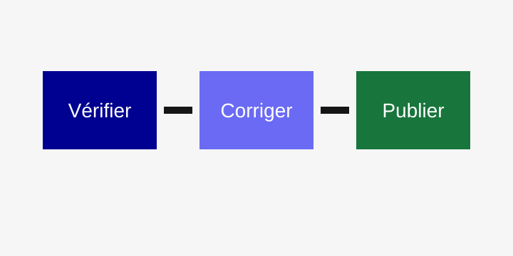
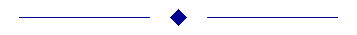

1. Actualité illustrée
Nouvelle ressource RGAA (Référentiel général d'amélioration de l'accessibilité)
Le ministère publie un kit court pour préparer une première revue d'accessibilité. Il s'adresse aux équipes qui contrôlent une page avant publication. La page présente les repères utiles pour vérifier rapidement une ressource.
Le schéma ci-dessous présente les trois étapes proposées aux équipes éditoriales. Il sert à comprendre l'ordre des actions à mener. Chaque étape correspond à un moment concret du travail de publication.

Cette démarche sert de repère pour vérifier une ressource avant publication. Elle aide l'équipe à passer de l'audit à la mise en ligne. Le visuel résume donc une information que le texte seul ne détaille pas entièrement.
La rubrique suivante présente le contact utile pour les questions sur la ressource. Un séparateur visuel introduit ce changement de sujet. Il ne porte pas d'information nécessaire à la compréhension du contenu.

Le séparateur visuel marque le passage vers les informations de contact. Il donne simplement un rythme à la lecture de la page. La même information reste compréhensible si ce motif n'est pas restitué.
Nous contacter
Moyen pour nous contacter : . Utilisez ce lien pour poser une question sur la ressource. Le lien doit rester compréhensible même lorsque seule l'image est annoncée.
Une réponse est apportée par l'équipe chargée de la ressource. Les demandes sont traitées pendant les jours ouvrés. Les informations transmises permettent d'orienter la demande vers le bon interlocuteur.